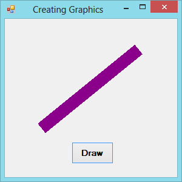

Visual Studio 2013 Lesson 25: Creating Graphics- The Basic Concept
[Lesson 24] << [Contents] >> [Lesson 26]
25.1 Introduction
Creating graphics is easy in earlier versions of Visual Basic because they have built-in drawing tools. For example, In Visual Basic 6, the drawing tools are included in the toolbox where the programmer just need to drag the shape controls into the form to create rectangle, square, ellipse,circle and more. However, its simplicity has the shortcomings, you don’t have many choices in creating customized drawings.
Visual Studio 2013 offers various graphics capabilities that enable programmers to write code that can create all kinds of shapes and even fonts. In this lesson,you will learn how to write code to draw lines and shapes on the Visual Studio 2013 IDE.
25.2 Creating the Graphics Object
Before you can draw anything on a form, you need to
create the Graphics object in Visual Studio 2013
. A graphics object is
created using the CreateGraphics()
method. You can create a graphics object that draw to the form itself or a
control.
To draw graphics on the default form, you can use the following statement:Dim
myGraphics As Graphics =me.CreateGraphicsTo draw in a picture box,
you can use the following statement:
Dim myGraphics As Graphics = PictureBox1.CreateGraphics
You can also use the text box as a drawing surface, the statement is:
Dim myGraphics As Graphics = TextBox1.CreateGraphics
The Graphics object that is created does not draw anything on the screen until you call the methods of the Graphics object. In addition,you need to create the Pen object as the drawing tool. We shall examine the code that can create a pen in the following section.
25.3 Creating a Pen
A Pen can be created using the following code:
myPen = New Pen(Brushes.Color, LineWidth)
where myPen is a Pen variable. You can use any variable name instead of myPen. The first argument of the pen object defines the color of the drawing line and the second argument defines the width of the drawing line. For example, the following code created a pen that can draw a dark magenta line and the width of the line is 10 pixels:
myPen = New Pen(Brushes.DarkMagenta, 10)
You can also create a Pen using the following statement:
Dim myPen As Pen
myPen = New Pen(Drawing.Color.Blue, 5)
Where the first argument define the color(here is blue, you can change that to red or whatever color you want) and the second argument is the width of the drawing line.
Having created the Graphics and the Pen objects, you are now ready to draw graphics on the screen which we will show you in the following section.
25.4 Drawing a Line
In this section, we will show you how to draw a straight line on the Form.
First of all, launch Visual Studio 2013 Express. In the start up page, drag a button into the form. Double click on the button and key in the following code.
Private Sub BtnDraw_Click(sender As Object, e As
EventArgs) Handles BtnDraw.Click
Dim myGraphics As Graphics = Me.CreateGraphics
Dim myPen As Pen
myPen = New Pen(Brushes.DarkMagenta, 20)
myGraphics.DrawLine(myPen, 60, 180, 220, 50)
End Sub
The second created the Graphics object and the third and fourth line create the Pen object. The fifth draw a line on the Form using the DrawLine method. The first argument use the Pen object created by you, the second argument and the third arguments define the coordinate the starting point of the line, the fourth and the last arguments define the ending coordinate of the line. The syntax of the Drawline argument is
object.DrawLine(Pen, x1, y1, x2, y2)
For the above example, the starting coordinate is (60,80) and the ending coordinate is (220,50)
Figure 25.1 shows the line created by the program.
Figure 25.1
{kind=link}